Metal Shader Debugger + Chromium
How many draw calls for my website?
TL:DR; This guide is useful for two kinds of work
- Canvas/SVG, Performance optimization
- WebGL, Debugging and performance (think spector.js on steroids)
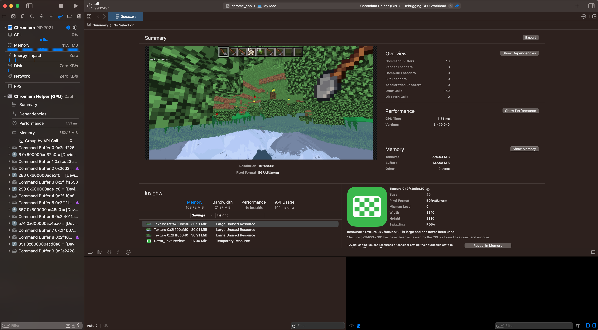 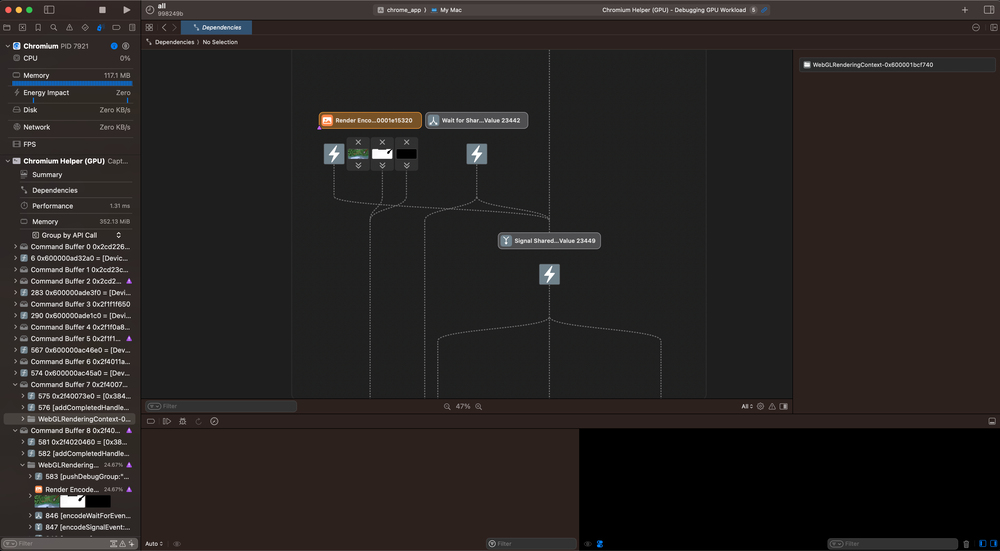 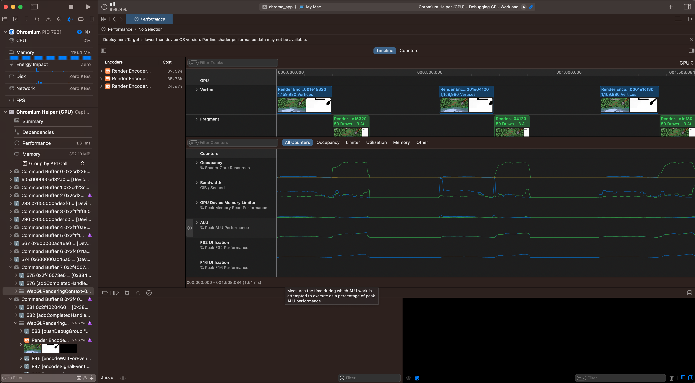
WebGL program open with summary, dependency graph, and performance views
0. Context
You probably know, academically, that browsers use shaders and graphics programming to performantly (or not) turn your HTML and CSS into stuff on your screen.
In fact, if you make websites that do non-trivial things (tools, games, etc.), you've probably seen those green "GPU" bars pop up in the Devtools Profiler. They're pretty opaque; they'll tell you if your site is GPU-bound, but they won't tell you why or how to fix it ... but you can find out, on MacOS, using this guide.
The Web needs the best performance tooling it can get. There are popular classes of phone which can run PUBG at 40fps, but scroll the web at less than 0.4fps. While a lot of this is JS going nuts invasively tracking everything, I have run into issues (especially around Canvas and SVG) where websites can get GPU-bound. If you run into a similar issue, this guide can be used to give you insight into the problem.
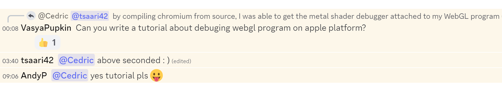The Graphics Programming Discord wants renderdoc on Mac for WebGL!
Other platforms
-
Performance + Debugging WebGL
- NVIDIA Nsight
- AMD GPU Detective
- PIX
-
Debugging Only (useful for WebGL dev)
- renderdoc (guide for Chromium here)
1. Making Chromium debuggable
If you simply open XCode and try to attach it to Chromium, you'll get a permissions error. There are two ways to get around this.
Surprisingly, I found building Chromium to be quite well documented and almost painless. You just paste some shell commands into your console, make some tweaks in XCode, and come back the next morning.
Simply follow the guide up to "Setting up the build" (but not including gn gen out/Default), then hop to step 2 of this guide (Running Chromium in XCode).
I did have to edit BUILD.gn and set treat_warnings_as_errors = false
I haven't gotten the codesigning approach to work. I am skeptical that it could ever work with the Metal Debugger because I cannot debug a local Chromium instance without having it built it in XCode. If you manage to get it to work, shoot me an email with details and I'll update this guide!
2. Running Chromium in XCode
Opening Chromium in XCode is an extremely laggy and painful experience, so I really wanted this to be possible without doing so. However, upon opening an empty XCode project and selecting "Attach to Process" -> "Chromium Helper (GPU)" I had the same experience as this stackoverflow user.
Therefore, I'm proceeding under the assumption that you have to have Chromium built in XCode for this to work.
This means you need to follow this bit of the "Building Chromium" guide.
gn gen out/gn --ide=xcode
open out/gn/all.xcodeproj
You should be greeted with this.
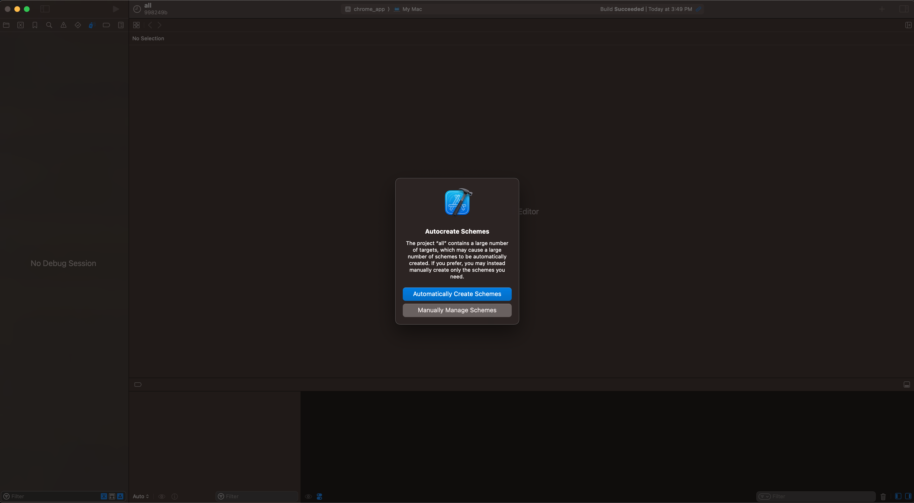Click "Automatically Create Schemes."
The tab will freeze for 15-30 seconds.
Next, select the chrome_app scheme. Then, edit it.
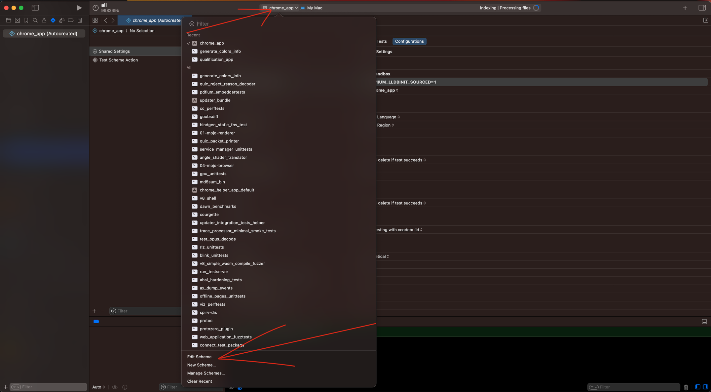Edit the chrome_app scheme.
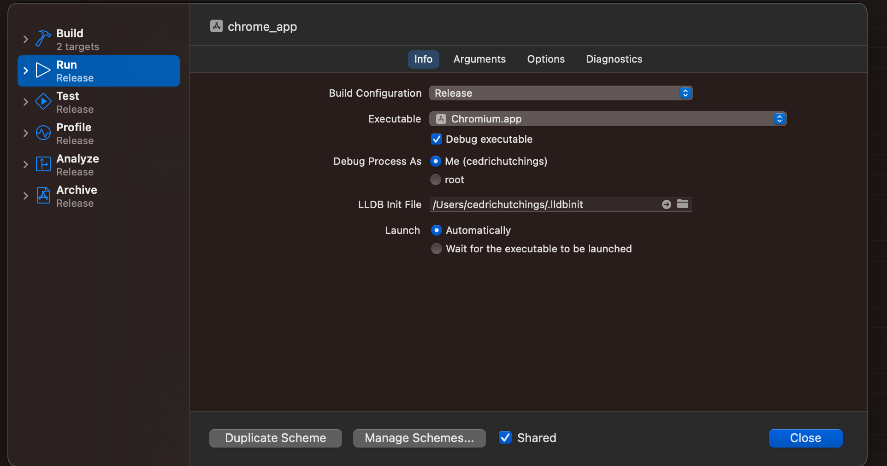
Simply click the "Options" tab. No other action is necessary here.
"Options" may already be the active tab.
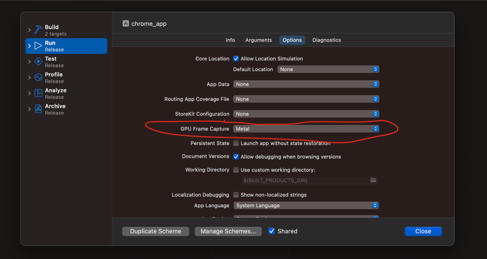
Set "GPU Frame Capture" to Metal.
This will ensure you get a metal icon to click on your toolbar in subsequent steps.
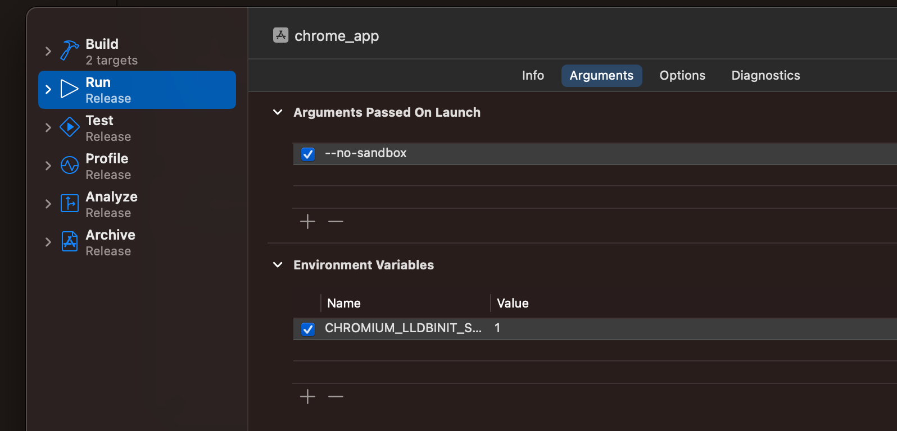
Add the --no-sandbox argument.
Set CHROMIUM_LLDBINIT_SOURCED=1.
This is necessary to allow opening Chromium in LLDB in XCode.
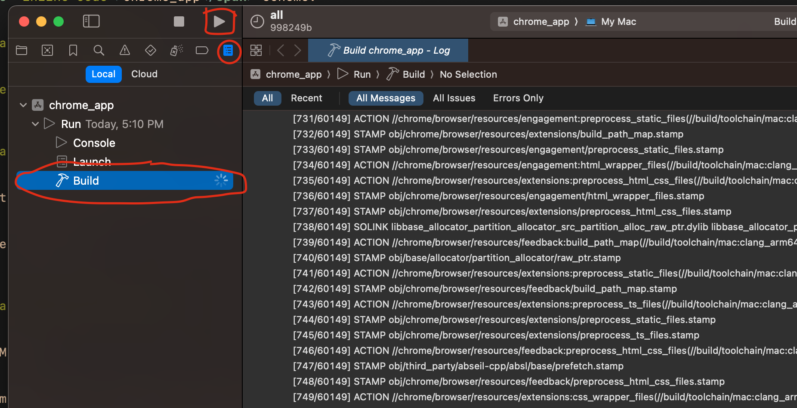
Click the "Play" button to begin a build.
Then, go to the "Build Artifacts" tab.
Click "Build" to see a log of compilation.
The build may take some time (hours) to complete.
3. Attaching the Metal Debugger to Chromium
Once the build completes, Chromium should open.
Now, inside Chromium, open your app, or do something else GPU intensive, like open cedcraft.
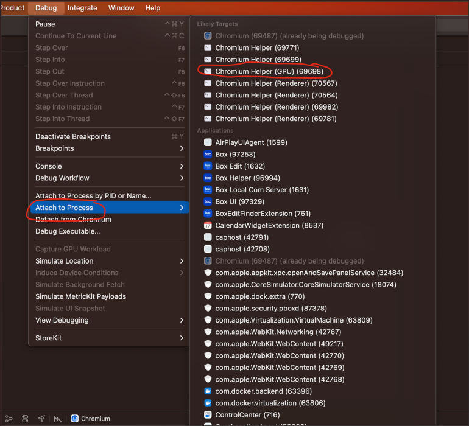Select "Debug" from the top toolbar.
Select "Attach to Process."
Select "Chromium Helper (GPU)."
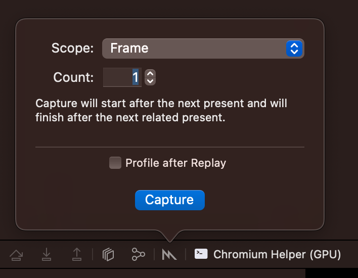
Select the Metal Icon on the middle/bottom toolbar.
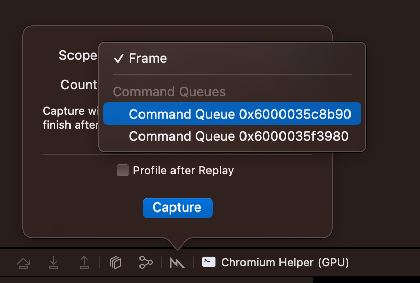
"Frame" captures, in my experience, never terminate.
Select a "Command Queue."
Generally, one is associated with Chromium's internal render processes, and the other(s) can be your WebGL Context(s).
I don't know of a way to identify which is which beforehand; you will inevitably see internal Chromium UI captures at least once.
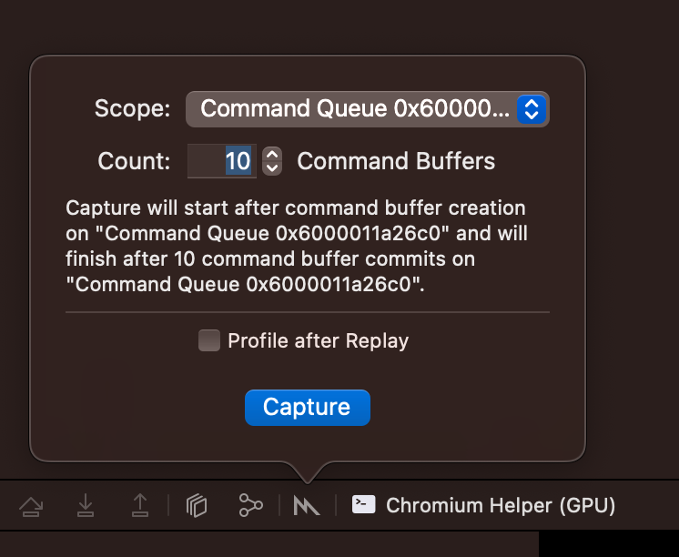
There is no clear "Frame" delineation, but usually 10 command buffers captures enough data to be useful.
You can press the fancy blue button now.
Optionally, click "Profile after Replay" beforehand.